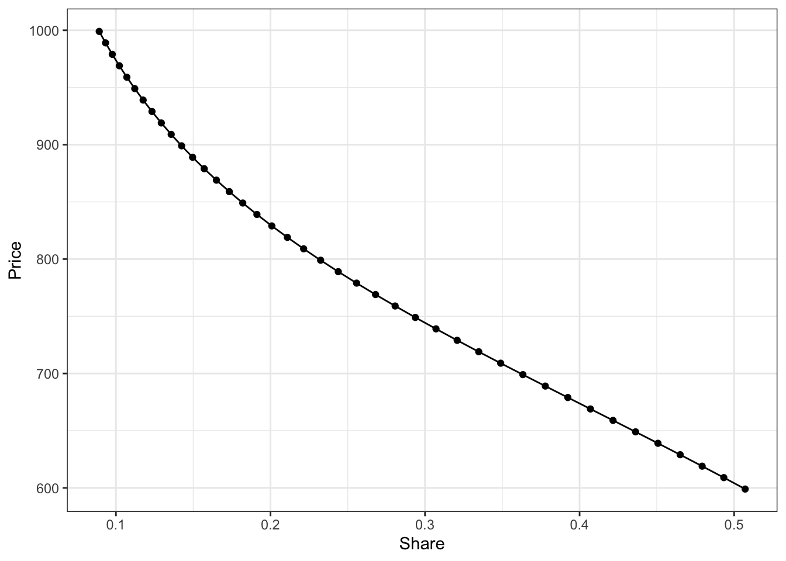
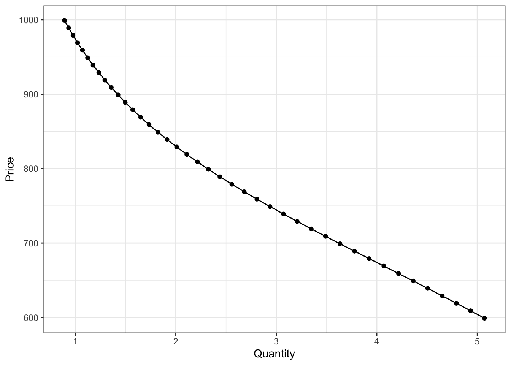
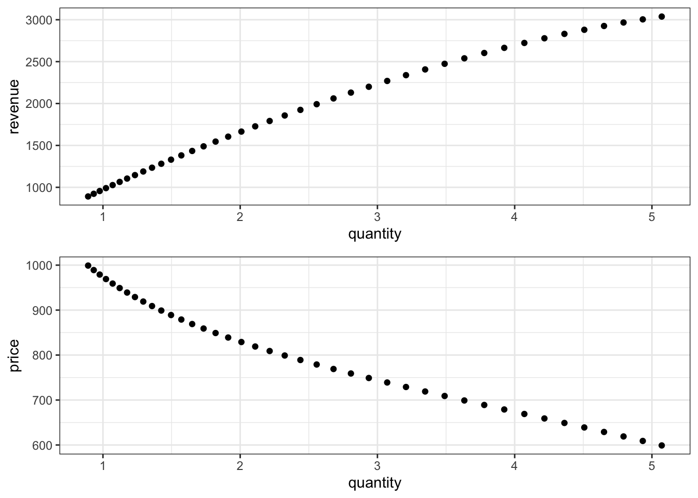
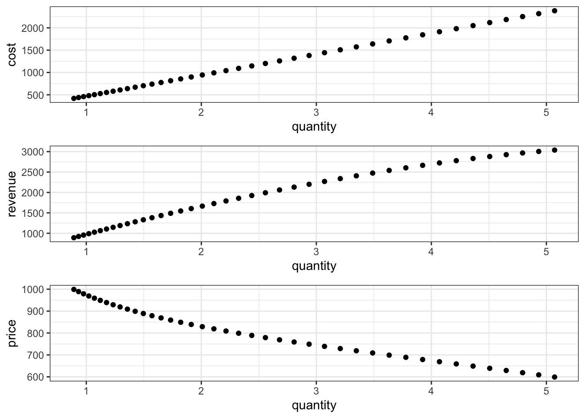
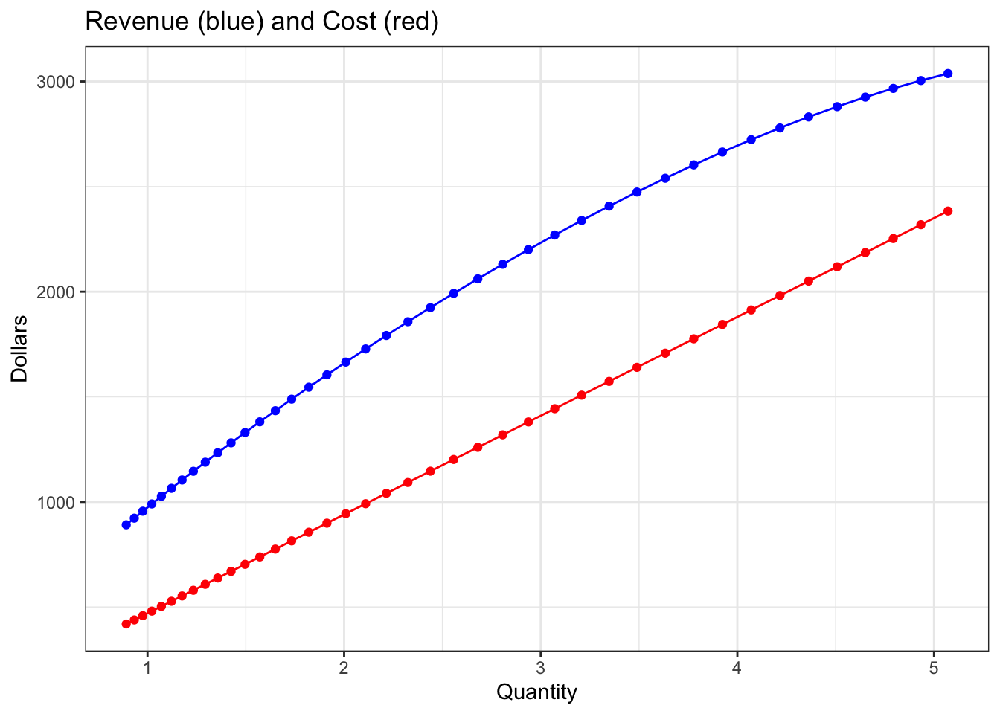
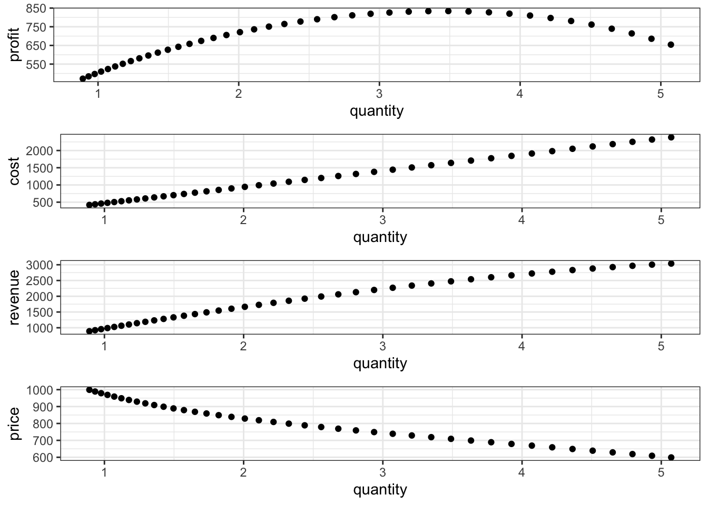
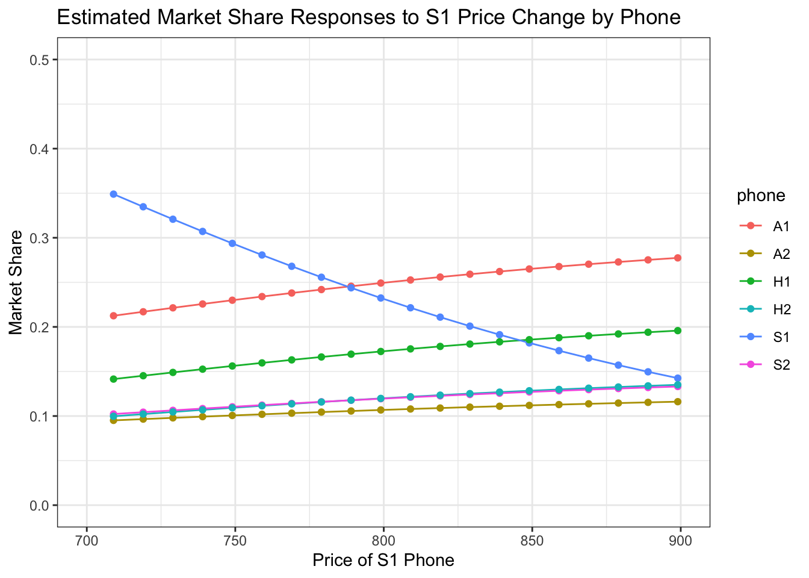

# Data Importing
suppressPackageStartupMessages(library(tidyverse))
suppressPackageStartupMessages(library(mlogit))
suppressPackageStartupMessages(library(gridExtra))
# load data, get segments, fit mnl model
# load main dataset
cust_dat <- read_csv("~//Desktop/MGT100 folder/smartphone_customer_data.csv", show_col_types = FALSE)
# load "enhanced" dataset for fitting mnl model
load("~/Desktop/MGT100 folder/mnl_datasets.RData")
# fit mnl data
out <- mlogit(choice ~ apple:segment +
samsung:segment +
price:segment +
screen_size:segment +
price:total_minutes:segment | 0, data=mdat1) Project 7: Price Optimization Using Demand Models
use the heterogeneous MNL from project 6 to optimize prices.
Objective
This script aims to optimize the pricing strategy for Samsung’s smartphone models using a heterogeneous Multinomial Logit (MNL) model. The analysis focuses on understanding consumer choice behavior in response to price variations and seeks to maximize the overall profitability of Samsung’s smartphone product line.
Supporting Information
The Multinomial Logit (MNL) model is essential for businesses to optimize pricing strategies because it provides a rigorous framework for understanding consumer choice behavior and the impact of price changes on demand. This model quantifies price elasticity, which measures how sensitive the quantity demanded is to price changes, helping businesses to identify the optimal price points for different products. The MNL model leverages economic principles such as utility maximization and economic value to the customer (EVC), combined with mathematical formulations like probability distributions and logistic functions, to predict purchase probabilities.in short, is tryting to figure out how much is customer’s willingness to pay (WTP)
In this project, I implement dynamic pricing strategies using the MNL model in R, analyzing T-Mobile data across various phone brands and models. The model allows us to assess how different pricing strategies influence consumer preferences and market share. By estimating the parameters that capture the impact of price and other product attributes, we can simulate different pricing scenarios and their effects on demand. This data-driven approach enables us to set prices that maximize revenue and align with customer segments’ willingness to pay.
How do you learn WTP?
The EVC method for product x:
Select a best, available alternative (y) and find it’s price.
Determine the incremental economic value of your product (x) over y [may involve the difference in non-price costs between x and y]
Split the benefit (not necessarily 50/50) with the customer
Economic Value to The Customer (EVC)
Best Available Alternative (y) Might not be a commercial product. Choose y based on customer interviews. if wrong y, EVC estimate will be too high.
Incremental Economic Value of X Consider benefits and non-price costs. Price of x doesn’t enter the calculation
Split the benefit Contrib margin (profit) VS con. surplus (growth) Fairness, pperceived vs actual benefit, etc
Can do this by segment y and EVC can vary across customer segments. If EVC<0, reconsider your product or target customer.
summary: The Economic Value to the Customer (EVC) method is a pricing strategy that determines the maximum price a customer is willing to pay based on the total value they derive from the product. The cost is the expense incurred to produce the product, while the price is set above the cost to ensure profitability. The perceived value is the customer’s assessment of the product’s worth, often higher than the price, providing the inducement to buy, which is the extra value perceived by the customer. The contribution margin is the profit margin between the cost and the price. The best available alternative (best avail. alt y) represents the value of the closest competing product. The area of negotiation is the range between the cost and the EVC, where the final price can be adjusted based on market dynamics and customer willingness to pay.
Example of EVC practice
In an academic project focused on pricing strategy, how can we determine the Economic Value to the Customer (EVC) and set an optimal price for a product that extends the lifespan of AA batteries by 800%, given the production cost and typical battery prices?
The Economic Value to the Customer (EVC) for the Batteriser, a device extending AA battery life by 800%, is calculated based on the savings it provides. Given that one Batteriser enables one AA battery to replace eight, the savings equate to the cost of eight batteries ($0.50 each), totaling $4.00. With a production cost of $1.00 per Batteriser, an optimal price point would be around $3.00. This price not only provides significant perceived value to the customer but also ensures a profitable margin for the company. Therefore, the EVC of the Batteriser is $4.00, and the recommended price is $3.00 to balance customer savings and business profitability.
Price Optimization Under CED and MNL
Constant Elasticity of Demand (CED) Model
Assume a convenient functional form: \(Q = e^{\alpha} \times P^{\beta}\)
This implies: \(\ln(Q) = \alpha + \beta \times \ln(P)\)
Slope coefficient is elasticity: \(\beta = \frac{d(\ln Q)}{d(\ln P)} = \frac{P}{Q} \frac{dQ}{dP} = \varepsilon\)
Optimal price is: \(P^{*} = \frac{c}{1 + \frac{1}{\varepsilon}}\)
Heterogeneous Multinomial Logit (MNL) Demand Model
Get estimated sales from market share predictions for a given price: \(q_{j}(p_{j}) = M \times \hat{s}_{j}(p_{j})\)
Calculate profit at that price: \(\pi(p_{j}) = q_{j}(p_{j}) \times \left[ p_{j} - c_{j}(q_{j}(p_{j})) \right]\)
Try a bunch of candidate prices, and pick the one that maximizes profit: \(p^{*} = \underset{p_{m}}{\arg\max} \ \pi(p_{m})\)
Library Imports and Data Preparation
Demand Curve for A Phone
Construct the estimated demand curve for the small Samsung phone (S1). That means we will vary the price of S1 while holding everything else constant, and track how its market share changes as we change its price.
Recall that last year S1 had a price of $799 and a market share of 25.3%.
# Get a vector of price changes to use
pvec <- seq(from = -200, to = 200, by = 10)
# Construct an empty matrix to store shares at each price
smat <- matrix(NA, nrow = length(pvec), ncol = 6)
colnames(smat) <- c("A1", "A2", "S1", "S2", "H1", "H2")
# Suppress output using invisible and capture.output
invisible(capture.output({
# Loop over the price change values
for (i in 1:length(pvec)) {
# Print progress (this will be suppressed)
cat("Working on", i, "of", length(pvec), "\n")
# Get the price change amount
p <- pvec[i]
# Change prices for S1 phones
tempdat <- as_tibble(mdat1) |> mutate(price = ifelse(phone_id == "S1", price + p, price))
# Make market share predictions with the temporarily-changed S1 prices
preds <- predict(out, newdata = tempdat)
# Calculate and store market shares
smat[i, ] <- colMeans(preds)
}
}, file = NULL))
# gather our prices and estimated shares into a dataframe
relcol <- which(colnames(smat) == "S1")
s1dat <- tibble(scenario=1:length(pvec), price=pvec+799, share=smat[,relcol])
# plot S1's inverse demand curve
ggplot(s1dat, aes(x=share, y=price)) +
geom_point() +
geom_line() +
labs(x="Share", y="Price") +
theme_bw()
The term “residual demand” is used when the demand is specific to a product and assumes that other factors remain constant. This approach acknowledges that changes in external factors, such as the prices of competing products like A1 or H1, will also affect the residual demand curve for S1.
It is important to observe that the model-predicted market share may not perfectly align with the observed market share. This discrepancy arises because the model includes brand-specific coefficients rather than product-specific coefficients. This difference is not a flaw in the model but rather an aspect to be cognizant of during analysis.
Model Fitting
# actual market shares
invisible({ cust_dat |> filter(years_ago == 1) |> count(phone_id) |> mutate(shr = n / sum(n))})
# predicted market shares at 0 price change
smat[21,] |> round(3) A1 A2 S1 S2 H1 H2
0.249 0.107 0.232 0.119 0.172 0.120 # Convert shares to number of phones
# Suppose the market size is such that 150 million smartphones are sold in the US each year
# and further suppose that the college-age demographic that we've measured with our
# dataset comprises 1 out of every 15 smartphone sales, or 10 million phones.
M <- 10
# Let's scale our demand curve to be in the price-quantity space instead of the price-share space
s1dat <- s1dat |> mutate(quantity = share*M)
ggplot(s1dat, aes(x=quantity, y=price)) +
geom_point() +
geom_line() +
labs(x="Quantity", y="Price") +
theme_bw()
# Calculate S1 price to maximize S1 profits based on own-price elasticity
# Marginal cost
# We need to know our marginal cost function. Suppose that a manager
# at Samsung informs us that it costs $470 to manufacture, transport,
# and advertise one S1 phone, regardless of how many S1 phones are produced.
mc1 <- 470
# Calculate own-price elasticity at +/- $10 from actual price of $799
p1 <- s1dat |> filter(price==799-10) |> pull(price)
q1 <- s1dat |> slice(20) |> pull(quantity)
p2 <- s1dat |> slice(22) |> pull(price)
q2 <- s1dat |> slice(22) |> pull(quantity)
elasticity <- ((q2-q1)/q1) / ((p2-p1)/p1)
elasticity[1] -3.62357 # Approximate optimal price using the elasticity rule
mc1 * 1 / (1 - 1/abs(elasticity))[1] 649.1452 # this approach suggests that S1 price should be set much lower ($649) than its
# current value ($799). However, it is based on an assumption of constant demand elasticity,
# whereas our estimated demand model does not restrict price elasticity to be constant
# As an aside: check elasticity over full range of prices considered
# total calc
p1 <- s1dat |> slice(1) |> pull(price)
q1 <- s1dat |> slice(1) |> pull(quantity)
p2 <- s1dat |> slice(41) |> pull(price)
q2 <- s1dat |> slice(41) |> pull(quantity)
elasticity <- ((q2-q1)/q1) / ((p2-p1)/p1)
elasticity[1] -1.234135 # one-window at a time calc
res_e <- vector(length=39)
for(i in 2:40) {
p1 <- s1dat |> slice(i-1) |> pull(price)
q1 <- s1dat |> slice(i-1) |> pull(quantity)
p2 <- s1dat |> slice(i+1) |> pull(price)
q2 <- s1dat |> slice(i+1) |> pull(quantity)
res_e[i-1] <- ((q2-q1)/q1) / ((p2-p1)/p1)
}
summary(res_e) Min. 1st Qu. Median Mean 3rd Qu. Max.
-4.229 -4.102 -3.624 -3.346 -2.689 -1.644 # Calculate S1 price to maximize S1 profit based on full set of MNL model estimates
# (We'll do this with grid search)
# revenue
s1dat <- s1dat |> mutate(revenue = price * quantity)
p1 <- ggplot(s1dat) + geom_point(aes(x=quantity, y=price)) + theme_bw()
p2 <- ggplot(s1dat) + geom_point(aes(x=quantity, y=revenue)) + theme_bw()
grid.arrange(p2, p1, ncol=1)
# notice that revenue increases, but starts to flatten out, as quantity increases
# margin
s1dat <- s1dat |> mutate(cost = mc1*quantity)
p3 <- ggplot(s1dat) + geom_point(aes(x=quantity, y=cost)) + theme_bw()
grid.arrange(p3, p2, p1, ncol=1)
# note how cost is linear, so unlike revenue, it does not start to flatten out
# at higher quantities
# profit, at a particular price, is the distance between the revenue and cost
# curves. Let's look at that distance graphically
ggplot(s1dat) +
geom_line(aes(x=quantity, y=revenue), color="blue") +
geom_point(aes(x=quantity, y=revenue), color="blue") +
geom_line(aes(x=quantity, y=cost), color="red") +
geom_point(aes(x=quantity, y=cost), color="red") +
xlab("Quantity") +
ylab("Dollars") +
ggtitle("Revenue (blue) and Cost (red)") +
theme_bw()
# the distance/gap is largest somewhere around a quantity of 3 million phones,
# which roughly corresponds to price in the $700-750. Let's now calculate
# profit and the profit maximizing price more exactly.
# profit
s1dat <- s1dat |> mutate(profit = revenue - cost)
p4 <- ggplot(s1dat) + geom_point(aes(x=quantity, y=profit)) + theme_bw()
grid.arrange(p4, p3, p2, p1, ncol=1)
# find S1-profit-maximizing quantity and price, and compare profit to $799 price
s1dat |> filter(price == 799)# A tibble: 1 × 7
scenario price share quantity revenue cost profit
<int> <dbl> <dbl> <dbl> <dbl> <dbl> <dbl>
1 21 799 0.232 2.32 1857. 1092. 765. s1dat |> filter(profit == max(profit))# A tibble: 1 × 7
scenario price share quantity revenue cost profit
<int> <dbl> <dbl> <dbl> <dbl> <dbl> <dbl>
1 12 709 0.349 3.49 2474. 1640. 834.We see that the profit-maximizing price of $709 results $834 million of profits. While the price of $799 results in only 765 million of profits
This demonstration has concentrated on determining the profit-maximizing price for the smartphone model S1, solely considering the profits generated by S1. However, it is essential to recognize that Samsung is interested in the overall profitability of its entire smartphone product line. Thus, the analysis so far has excluded the consideration of model S2. We will now extend our analysis to incorporate the impact of S2 on the total profit from Samsung’s smartphone product line.
Calculate S1 price to maximize total Samsung smartphone profit
# The manager at Samsung reports that S2 marginal costs are $490
mc2 <- 490
# Let's calculate quantity, revenue, cost, and profit for the S2 phone
s2dat <- tibble(scenario=1:length(pvec), price=899, share=smat[,4])
s2dat <- s2dat |> mutate(quantity = share*M,
revenue = price * quantity,
cost = mc2*quantity,
profit = revenue - cost)
# now we will aggregate across phones to get total Samsung smartphone profit
s2dat <- s2dat |> mutate(price=0)
sdat <- rbind(s1dat, s2dat)
sdat <- sdat |> group_by(scenario) |>
summarize_all(sum)
# find Samsung profit-maximizing quantity and price
sdat |> filter(price == 799)# A tibble: 1 × 7
scenario price share quantity revenue cost profit
<int> <dbl> <dbl> <dbl> <dbl> <dbl> <dbl>
1 21 799 0.352 3.52 2931. 1678. 1253. sdat |> filter(profit == max(profit))# A tibble: 1 × 7
scenario price share quantity revenue cost profit
<int> <dbl> <dbl> <dbl> <dbl> <dbl> <dbl>
1 16 749 0.404 4.04 3192. 1921. 1271. # we get a profit maximizing price of $749 leading to $1,271 mil in profits,
# which is $18 million more than the profit of $1,253 when s1 is priced at $799
# why do we get different answer?
# As you decrease the price of S1, S1 is estimated to garner a larger
# market share. The increase to S1's share results from decreases to
# other phones' market shares. These other phone include competitors'
# phones like A1, A2, H1, and H2, but also Samsung's other phone S2.
share_dat <- as_tibble(cbind(S1_price=pvec+799, smat))
share_dat <- pivot_longer(share_dat, cols=A1:H2, names_to="phone", values_to="share")
ggplot(share_dat, aes(x=S1_price, y=share, color=phone)) +
geom_line() +
geom_point() +
xlab("Price of S1 Phone") +
ylab("Market Share") +
ggtitle("Estimated Market Share Responses to S1 Price Change by Phone") +
xlim(c(700,900)) + ylim(c(0,0.5)) +
theme_bw()Warning: Removed 126 rows containing missing values (`geom_line()`).Warning: Removed 126 rows containing missing values (`geom_point()`).
Conclusion
To determine the total profit-maximizing price for Samsung’s S1 smartphone, it is necessary to balance the increased revenue and profit from setting a low price for S1 against the potential loss of revenue and profit from customers switching from S2 to S1. Pricing S1 too low may attract buyers away from S2, thereby reducing the overall profitability of Samsung’s smartphone product line. Therefore, the optimal pricing strategy must consider both the direct profits from S1 and the indirect impact on S2 sales.
This script effectively demonstrates a comprehensive approach to price optimization using advanced econometric modeling. By employing the heterogeneous MNL model, the analysis provides insights into how price variations affect consumer demand for specific smartphone models. The results emphasize the importance of considering cross-product interactions and the overall product line profitability when making pricing decisions. This methodology can be applied to other product lines and industries to enhance pricing strategies and maximize overall profitability.